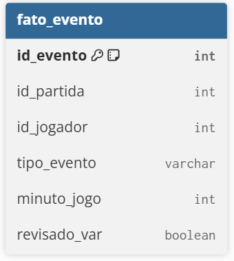
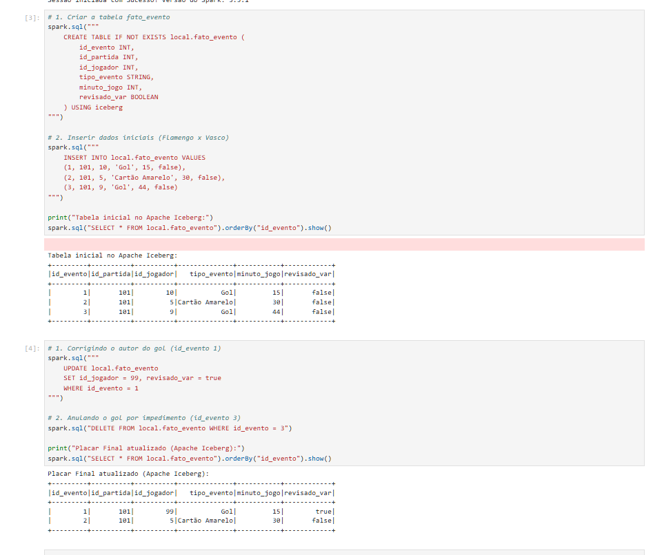
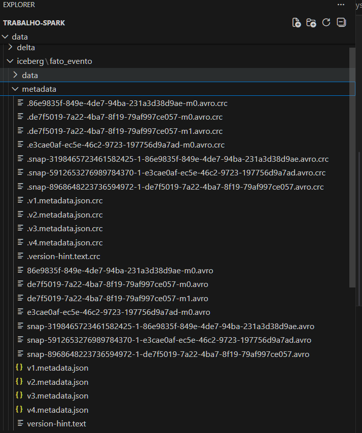

Apache Iceberg
O que é o Apache Iceberg?
O Apache Iceberg é um formato de tabela aberto e de alto desempenho para conjuntos de dados analíticos enormes. Ele não é um motor de processamento (como o Spark) e nem um sistema de armazenamento físico (como o HDFS ou o AWS S3). Em vez disso, ele é uma camada de metadados que fica entre o processamento e o armazenamento.
Historicamente, os Data Lakes baseados no ecossistema Hadoop (usando o formato Hive) tinham muitas limitações ao lidar com tabelas gigantes. Atualizar uma única linha ou alterar a estrutura (schema) da tabela era um processo demorado e perigoso, podendo corromper os dados. O Iceberg foi criado originalmente pela Netflix justamente para resolver esses problemas, trazendo a confiabilidade dos bancos de dados tradicionais (SQL) para o mundo do Big Data.
Principais Funcionalidades
O Iceberg introduz conceitos fundamentais para a nossa arquitetura:
- Transações ACID: Garante que operações de leitura e escrita sejam seguras. Se um trabalho de inserção de dados falhar no meio do caminho, a tabela não ficará corrompida com dados parciais.
- Evolução de Schema (Schema Evolution): Permite adicionar, renomear ou remover colunas de uma tabela sem a necessidade de reescrever todos os dados antigos.
- Particionamento Oculto (Hidden Partitioning): O Iceberg gerencia as partições fisicamente debaixo dos panos, evitando que o usuário precise escrever consultas SQL complexas para filtrar dados de forma eficiente.
- Viagem no Tempo (Time Travel): Como o Iceberg rastreia todas as mudanças através de "snapshots" (fotografias do estado da tabela), é possível consultar como a tabela estava exatamente em um dia ou horário anterior.
Aplicação no nosso Cenário (Futebol e VAR)
No contexto do nosso modelo de estatísticas de partidas de futebol, o Apache Iceberg brilha nas operações críticas.
Se o Árbitro de Vídeo (VAR) anula um gol após a partida já ter encerrado, nós precisamos executar um comando de DELETE ou UPDATE na tabela fato_evento. Em um Data Lake sem Iceberg, teríamos que reescrever todo o arquivo daquela rodada. Com o Iceberg operando em conjunto com o Apache Spark, podemos rodar um simples comando DML (Data Manipulation Language) e a camada de metadados do Iceberg se encarregará de invalidar o registro do gol antigo de forma atômica e segura, sem interromper as análises de quem estiver lendo a tabela naquele exato momento.
🛠️ Implementação Prática e Operações CRUD
No nosso arquivo iceberg_football.ipynb, utilizamos as extensões do Apache Iceberg no Spark para executar comandos DML (Data Manipulation Language) utilizando a linguagem SQL padrão.
1. Definição da Tabela (DDL)
Abaixo, o diagrama da nossa tabela que registra os lances do jogo:

A criação da tabela no Iceberg é feita de forma declarativa, definindo claramente o schema e indicando o uso do formato iceberg.
CREATE TABLE IF NOT EXISTS local.fato_evento (
id_evento INT,
id_partida INT,
id_jogador INT,
tipo_evento STRING,
minuto_jogo INT,
revisado_var BOOLEAN
) USING iceberg
2. Inserção (Create/Insert)
A inserção de dados cria um novo arquivo de manifesto, garantindo que a versão inicial da partida (Flamengo x Vasco) seja registrada com segurança.
INSERT INTO local.fato_evento VALUES
(1, 101, 10, 'Gol', 15, false),
(2, 101, 5, 'Cartão Amarelo', 30, false),
(3, 101, 9, 'Gol', 44, false)
3. Atualização (Update) - A Correção do VAR
O VAR validou o lance e identificou que o autor do primeiro gol foi, na verdade, o jogador de ID 99. Utilizamos o comando UPDATE tradicional de bancos de dados.
UPDATE local.fato_evento
SET id_jogador = 99, revisado_var = true
WHERE id_evento = 1
4. Exclusão (Delete) - Gol Anulado
Para remover o segundo gol que foi anulado por impedimento, o comando DELETE é suportado nativamente, sem necessidade de reescrever a tabela inteira.
DELETE FROM local.fato_evento WHERE id_evento = 3
5. Evidência de Execução (Spark SQL)
Abaixo, a comprovação do nosso código rodando no Jupyter Notebook. Através da linguagem SQL padrão, conseguimos criar a tabela, inserir os dados iniciais e simular a ação do VAR atualizando (UPDATE) o autor do primeiro gol e anulando (DELETE) o segundo gol.

6. Por baixo dos panos (Arquitetura Iceberg)
Ao contrário de arquiteturas antigas que dependem de pastas físicas, o Apache Iceberg gerencia tudo através de metadados. A imagem abaixo mostra a pasta metadata criada no nosso projeto. Note a presença dos arquivos .json (v1, v2, v3, v4) e .avro. Cada operação DML que executamos via SQL gerou um novo "snapshot" (foto do estado atual), garantindo que consultas em andamento nunca falhem e permitindo auditoria dos dados.

Nota Técnica: Cada uma dessas operações CRUD gerou um novo arquivo JSON na subpasta
metadatado Iceberg, formando o histórico de snapshots. Isso demonstra a capacidade do formato de suportar modificações atômicas de nível de linha (row-level updates) utilizando diretamente o Spark SQL.